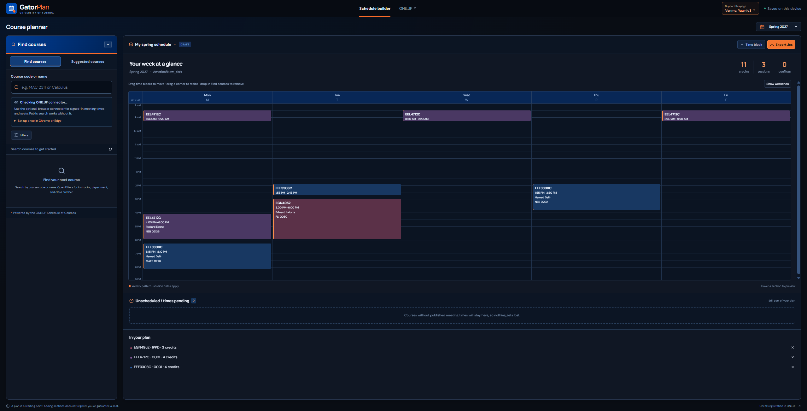

Preview your courses.
Before registration.
GatorPlan lets UF students search courses, compare sections, and see their week ahead of their registration date.

Architecture
LOGICAL ARCHITECTUREBuild notes & technical detail
The problem
Students need to see and compare their courses before their assigned registration date. GatorPlan gives them a course preview so they can prepare ahead of that date.
The build
GatorPlan connects a planning interface with UF course information. The important handoff is from the source data to course, section, and meeting records the schedule can use.
The engineering decision
Keep data interpretation at the integration boundary. A calendar should compare consistent meeting intervals rather than repeatedly decode a raw API response.
What that enables
Students can preview courses before their registration date. The preview supports preparation; enrollment happens through UF.
Architecture & scope
The live planner supports public course search and an optional browser connector for signed-in meeting times and seats. The diagram shows logical responsibilities rather than deployment topology.